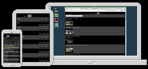
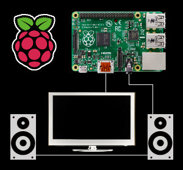

RemotePi -- Raspberry Pi Media Centre
DESCRIPTION
Use your Raspberry Pi as a media centre. With a twist.
Control it with any smartphone, tablet or computer on your LAN.
Browse your music/videos, internet radio stations or YouTube, and manage your playlist.
COMPONENTS
|  |
UI runs in any browser, single page web app with tabs
|
| LAN - Ethernet/WiFi | |
|  |
Backend components
|
ABSENT FEATURES AND COMPONENTS
- No MP3 tags. They are evil. Just directories and files.
- No GUI stack needed on the Raspberry Pi. Just a web server.
- No keyboard/mouse access needed to the Raspberry Pi.
- No TV needed for control. It's just for videos.
- No fancy protocols. Just mount the file-system with your media files.
- No Android/iOS/Windows/Linux clients. Just a web-app.
INSTALLATION ON RASPBIAN
Do all operations below as root.
Create the file /etc/apt/sources.list.d/subogero.list with the following contents:
deb http://linux.subogero.com/deb/ /And then simply:
apt-get update apt-get install remotepi
This will install all dependencies as well and print the site URL at the end.